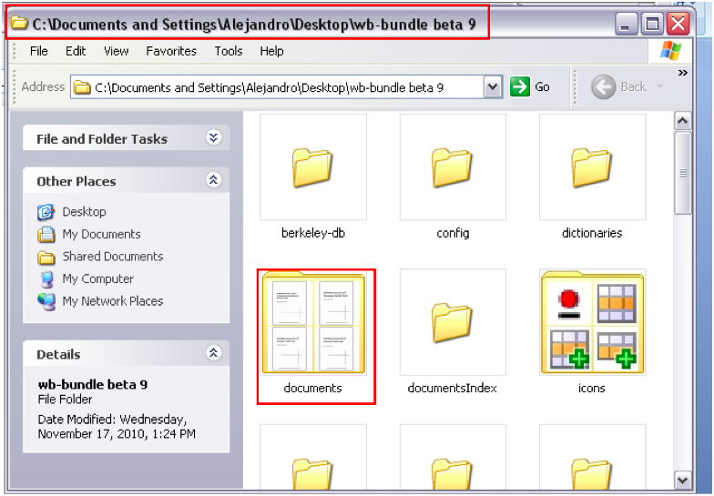
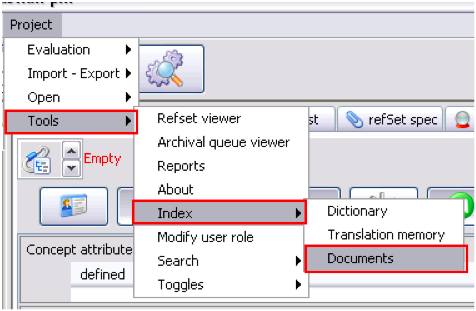
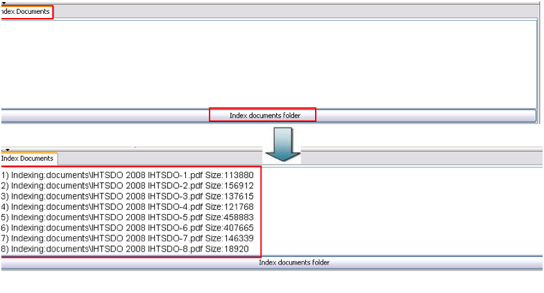
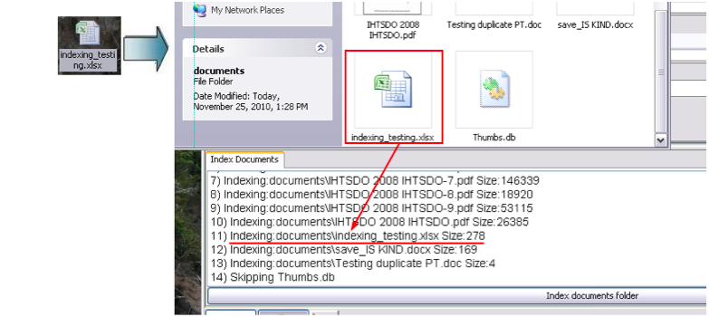

Index documents
- Documents must be indexed to be searched. The translation bundle folder contains a
folder called "documents" with a few sample documents:

- In the translation workbench, select Index Documents option:

- Indexing window is opened in the lower third of the screen. Click “Index documents
folder”. All the documents included in this folder will be indexed (.pdf, . docx, .doc,
.xlsx, .xls). The process may take a longer time when heavy documents are indexed)

- To add a document that is not in the Documents folder you should place it there first
and then press Index documents folder:
